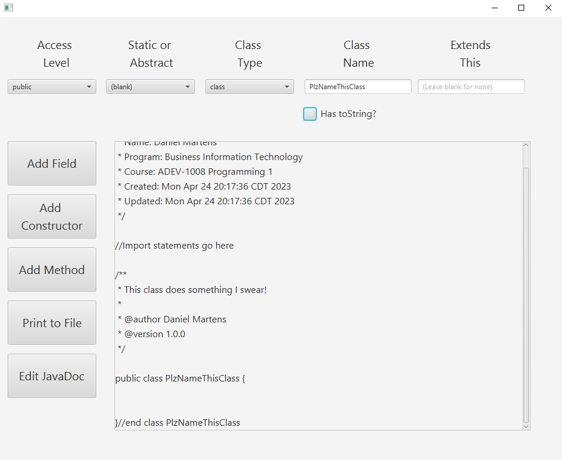
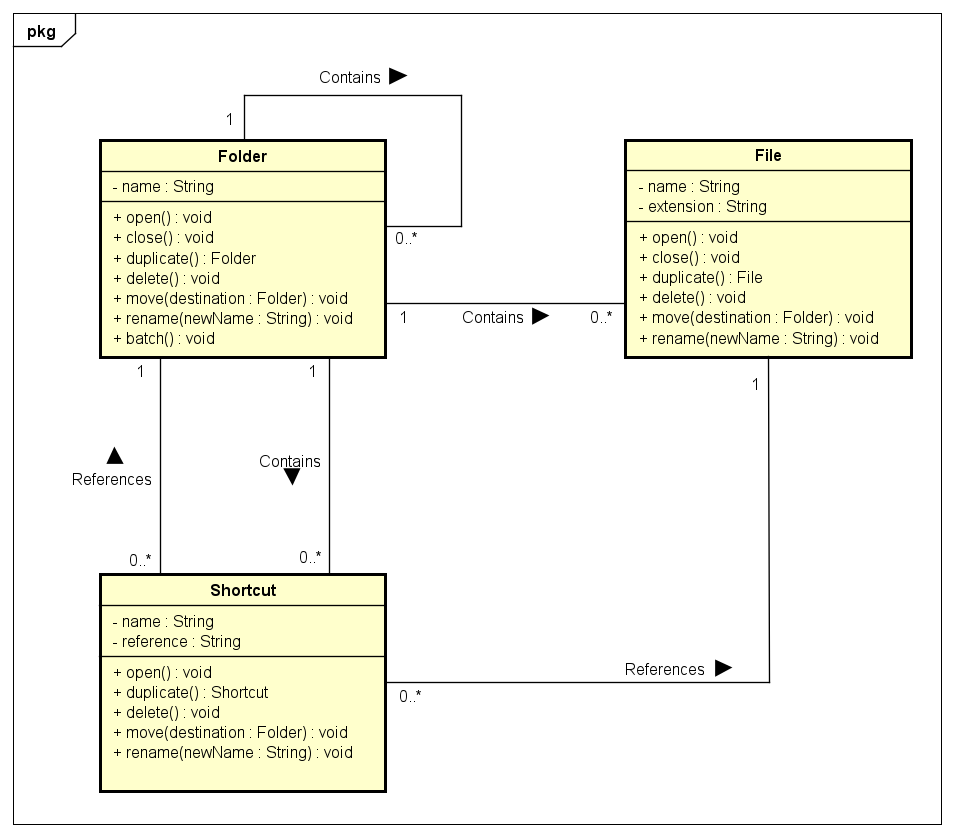

Skills I've Learned
In programming 1, I decided to challenge myself and learn something new. So I picked up JavaFX and SceneBuilder and learned how to create form applications in Java. Within the span of a weekend I had learned the basics and had created an application that could be used to quickly generate the assignments for the programming 1 course.


While not my favourite course, I definitely learned some useful skills in system analysis. Including the basics of project management, unified process, the RADIT workflows, and creating and understanding diagrams such as activity, use case, object, and analysis diagrams such as this one.